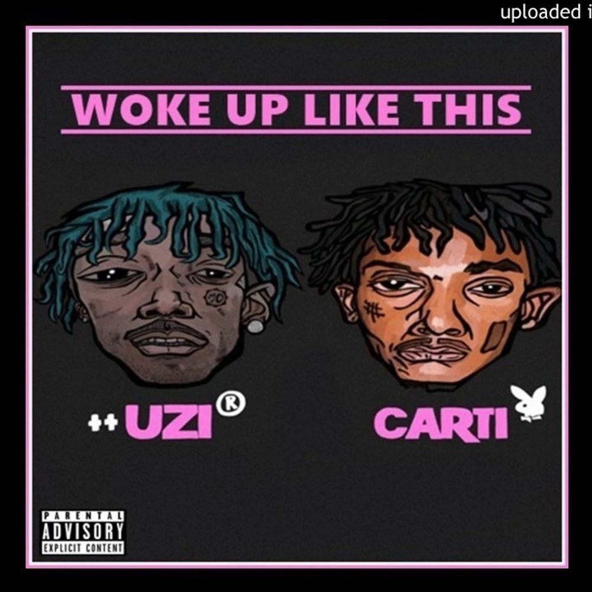
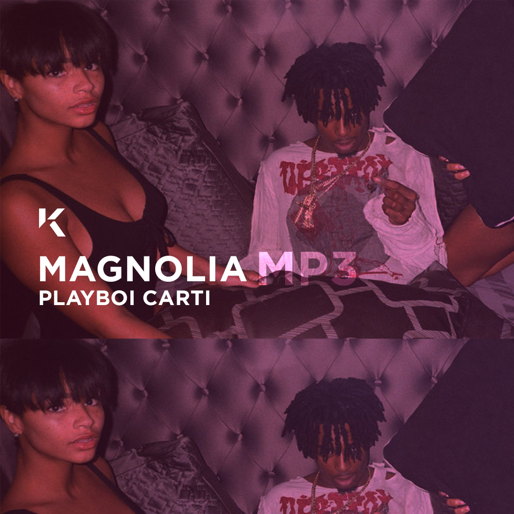

2018
"Die Lit", a Studio album created by Playboi Carti, was released on May 11th of 2018. It received a RIAA Gold Certification and was produced under the label Interscope with artists such as Pierre Borne, Lil Uzi Vert, Etc..

2017
"Playboy Carti", a Mixtape by Playboi Carti, was released on April 14th, 2017. It received a RIAA Gold Cerifivation and was also on the Billboard Top 100 Songs for two weeks.

2017
"Woke Up Like This", a single by Playboi Carti and Lil Uzi Vert, was released in 2017 and Went 2x Platinum by RIAA standards.
2017
"Magnolia", a single by Playboi Carti, was released in 2017 and Went 3x Platinum by RIAA standards and 2x Platinum by MC standards. This song created a huge bump in his career that led to him being the superstar he is today.
Upcoming Music
"Whole Lotta Red", a studio album by Playboi Carti, is set to be released at some point in 2019, although it is possible the album wont be dropped until 2020. This album has been leaked multiple times since it was teased, and is the main reason that the offical release is taking so long.